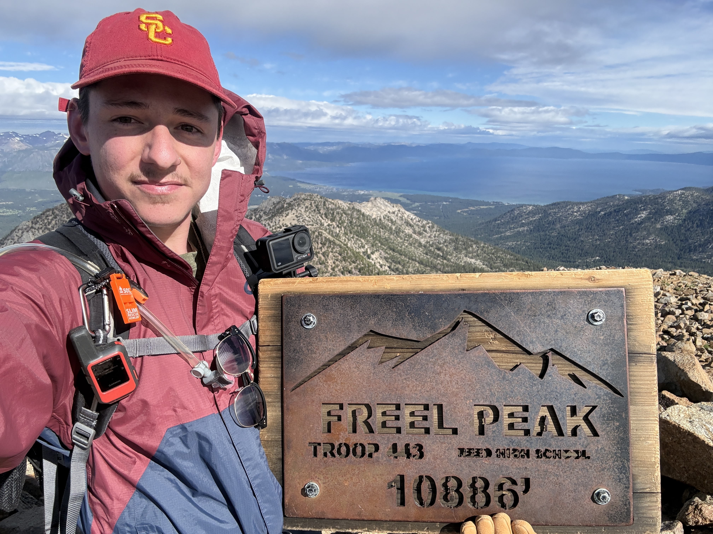
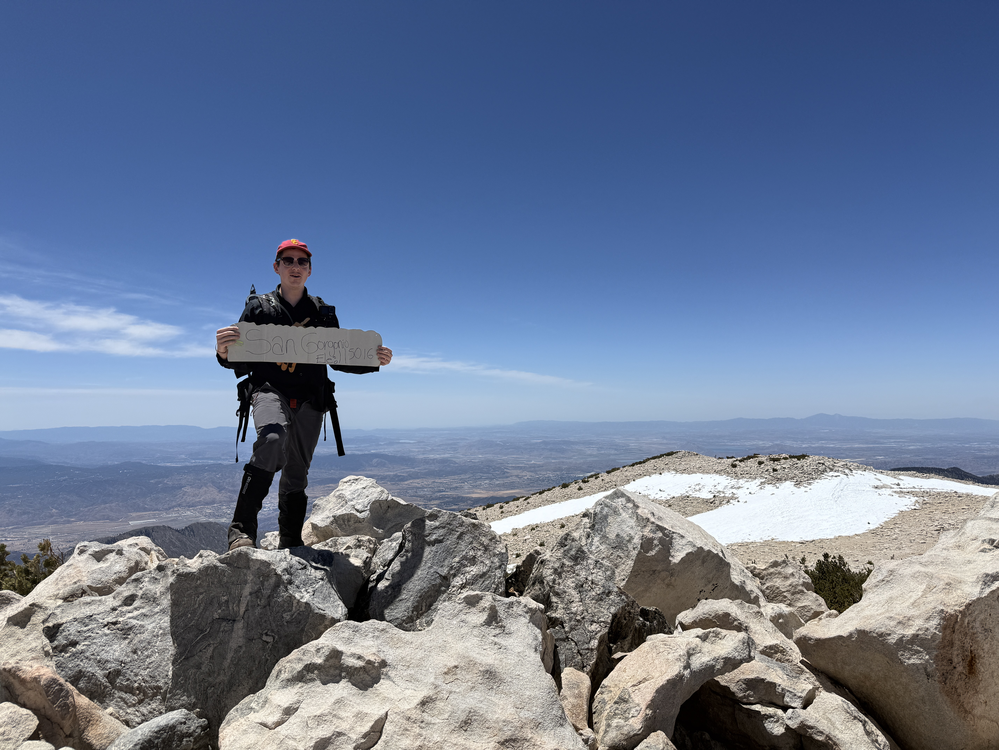

Click the map to view coordinates.
| County | Name | Elevation (ft.) | Completed? |
|---|---|---|---|
| Alameda | Challenger Peak | 3853.5 | No |
| Alpine | Sonora Peak | 11462.8 | Yes |
| Amador | Thunder Mountain | 9423.7 | Yes |
| Butte | Butte County High Point | 7120.0 | No |
| Calaveras | Corral Hollow Hill | 8170.1 | Yes |
| Colusa | Snow Mountain | 7052.4 | No |
| Contra Costa | Mount Diablo | 3848.5 | No |
| Del Norte | Bear Mountain | 6400.0 | No |
| El Dorado | Freel Peak | 10882.9 | Yes |
| Fresno | North Palisade | 14245.1 | No |
| Glenn | Black Butte | 7452.9 | No |
| Humboldt | Salmon Mountain | 6958.6 | No |
| Imperial | Blue Angels Peak | 4551.7 | Yes |
| Inyo | Mount Whitney | 14500.7 | No |
| Kern | Sawmill Mountain | 8825.2 | Yes |
| Kings | Table Mountain | 3475.9 | No |
| Lake | Snow Mountain | 7052.4 | No |
| Lassen | Hat Mountain | 8750.3 | No |
| Los Angeles | Mount San Antonio | 10067.8 | Yes |
| Madera | Mount Ritter | 13161.1 | No |
| Marin | Mount Tamalpais - West Peak | 2576.8 | No |
| Mariposa | Parsons Peak - Northwest Ridge | 12040.0 | No |
| Mendocino | Anthony Peak | 6957.4 | No |
| Merced | Laveaga Peak | 3802.5 | No |
| Modoc | Eagle Peak | 9892.4 | No |
| Mono | White Mountain Peak | 14244.8 | No |
| Monterey | Junipero Serra Peak | 5859.2 | No |
| Napa | Mount Saint Helena - East Peak | 4220.6 | No |
| Nevada | Mount Lola | 9145.8 | No |
| Orange | Santiago Peak | 5688.3 | No |
| Placer | Mount Baldy - West Ridge | 9035.0 | Yes |
| Plumas | Mount Ingalls | 8376.4 | No |
| Riverside | San Jacinto Peak | 10809.3 | Yes |
| Sacramento | Carpenter Benchmark | 830.9 | Yes |
| San Benito | San Benito Mountain | 5241.9 | No |
| San Bernardino | San Gorgonio Mountain | 11501.0 | Yes |
| San Diego | Hot Springs Mountain | 6532.4 | Yes |
| San Francisco | Mount Davidson | 932.2 | No |
| San Joaquin | Boardman North | 3632.0 | No |
| San Luis Obispo | Caliente Mountain | 5109.7 | No |
| San Mateo | Long Ridge | 2622.2 | No |
| Santa Barbara | Big Pine Mountain | 6823.0 | No |
| Santa Clara | Copernicus Peak | 4385.3 | No |
| Santa Cruz | Mount Bielawski | 3235.7 | No |
| Shasta | Lassen Peak | 10461.7 | No |
| Sierra | Mount Lola - North Ridge Peak | 8855.0 | No |
| Siskiyou | Mount Shasta | 14160.6 | No |
| Solano | Mount Vaca | 2822.2 | No |
| Sonoma | Cobb Mountain - Southwest Peak | 4495.3 | No |
| Stanislaus | Mount Stakes | 3809.0 | No |
| Sutter | South Butte | 2120.0 | No |
| Tehama | Brokeoff Mountain | 9238.4 | No |
| Trinity | Mount Eddy | 9032.8 | No |
| Tulare | Mount Whitney | 14500.7 | No |
| Tuolumne | Mount Lyell | 13118.5 | No |
| Ventura | Mount Pinos | 8839.0 | Yes |
| Yolo | Little Blue Ridge | 3133.5 | No |
| Yuba | Yuba County High Point | 4825.0 | No |